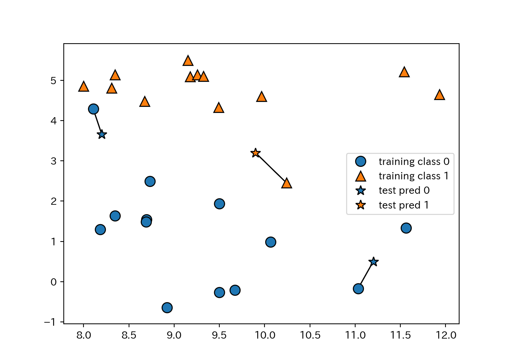
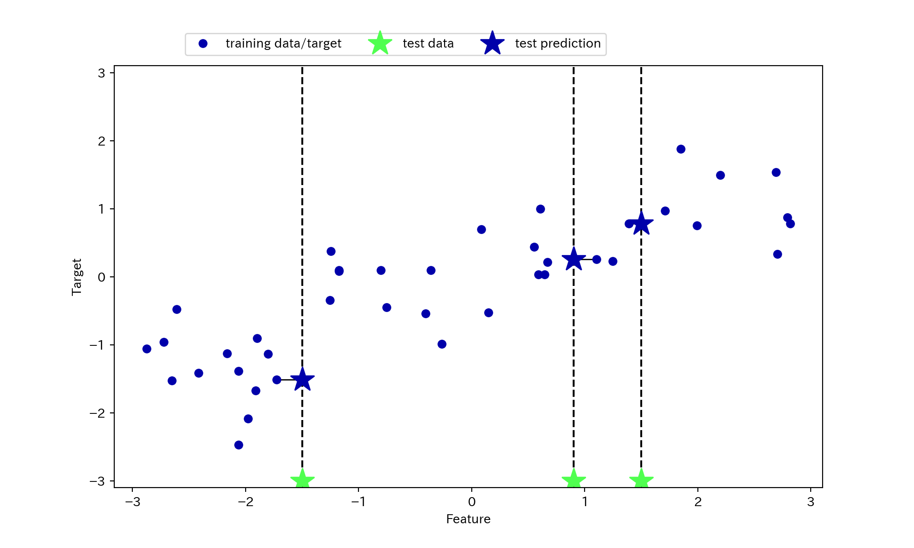
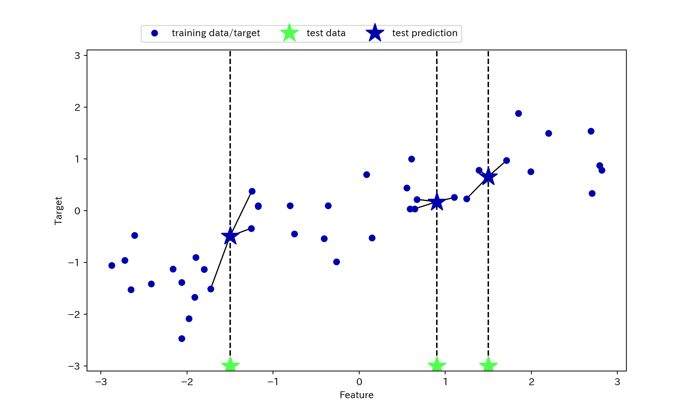
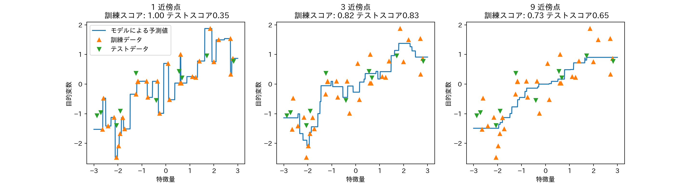

2.4 アルゴリズム1 \(k\)-最近傍法
- a.k.a. \(k\)-NN
- 近いやつは大体おんなじ。
2.4.1 \(k\)-最近傍法によるクラス分類
- \(k\)は参考にする近傍点の個数。
- 1-NNの例。
mglearn.plots.plot_knn_classification(n_neighbors=1)
- 3-NNの例
- 近傍点が複数のときは多数決で決める。
mglearn.plots.plot_knn_classification(n_neighbors=3)
- scikit-learnでやる。
from sklearn.model_selection import train_test_split
X, y = mglearn.datasets.make_forge()
X_train, X_test, y_train, y_test = train_test_split(X, y, random_state=0)
from sklearn.neighbors import KNeighborsClassifier
clf = KNeighborsClassifier(n_neighbors=3).fit(X_train, y_train)
print(clf.score(X_test, y_test))
## 0.85714285714285712.4.2 KNeighborsClassifierの解析
- 特徴量が2つしかなければ、散布図が描ける。
- 散布図上のあらゆる箇所についてもしその場所に点があったらと考えて判別ができる。
- つまり、特徴量がつくる平面を分類クラスで塗り分けることができる。
- 境界線を決定境界と呼ぶ。
fig, axes = plt.subplots(1, 3, figsize = (10, 3))
for n, ax in zip([1, 3, 9], axes):
clf = KNeighborsClassifier(n_neighbors = n).fit(X, y)
mglearn.plots.plot_2d_separator(clf, X, fill=True, eps = 0.5, ax = ax, alpha = .4)
mglearn.discrete_scatter(X[:, 0], X[:, 1], y, ax = ax)
ax.set_title("{} neighbor(s)".format(n))
ax.set_xlabel("特徴量 0")
ax.set_ylabel("特徴量 1")
axes[0].legend(loc=3)
- 近傍点が多いほど境界がなめらか = モデルは単純になる。
- 近傍点1 = 最も複雑なモデル
- 近傍点数 = データ数 -> ただの多数決
- ということは近傍点数の数を増やしていくと、どこかで汎化能力のピークが…？
- cancerデータセットで試してみる。
from sklearn.datasets import load_breast_cancer
cancer = load_breast_cancer()
X_train, X_test, y_train, y_test = train_test_split(
cancer.data, cancer.target, stratify = cancer.target, random_state = 66
)
training_accuracy = []
test_accuracy = []
n_settings = range(1, 11)
for n in n_settings:
clf = KNeighborsClassifier(n_neighbors = n).fit(X_train, y_train)
training_accuracy.append(clf.score(X_train, y_train))
test_accuracy.append(clf.score(X_test, y_test))
plt.plot(n_settings, training_accuracy, label = "訓練セット精度")
plt.plot(n_settings, test_accuracy, label = "テストセット精度")
plt.ylabel("精度")
plt.xlabel("近傍点数")
plt.legend()
2.4.3 \(k\)-近傍回帰
- kNNは回帰もできる。
- 1-NNでは近傍点の値が新しい観測値に対応する値だと考える。
mglearn.plots.plot_knn_regression(n_neighbors = 1)
- 近傍点が複数の時は平均値を使う。
mglearn.plots.plot_knn_regression(n_neighbors = 3)
- scikit-learnでは、KNeighborsRegressorクラスに実装されてる。
from sklearn.neighbors import KNeighborsRegressor
X, y = mglearn.datasets.make_wave(n_samples = 40)
X_train, X_test, y_train, y_test = train_test_split(X, y, random_state=0)
reg = KNeighborsRegressor(n_neighbors = 3).fit(X_train, y_train)
print(reg.score(X_test, y_test))
## 0.83441724462496042.4.4 KNeighborsRegressorの解析
- 1次元のデータセットに対する予測値は、近傍点数\(k\)に対してどのように変化するか？
# プロット先を3つ作る
fig, axes = plt.subplots(1, 3, figsize = (15, 4))
# -3〜3までの間にデータポイントを1000点作る
line = np.linspace(-3, 3, 1000).reshape(-1, 1)
for n_neighbors, ax in zip([1, 3, 9], axes):
reg = KNeighborsRegressor(n_neighbors = n_neighbors)
reg.fit(X_train, y_train)
ax.plot(line, reg.predict(line))
ax.plot(X_train, y_train, '^')
ax.plot(X_test, y_test, 'v')
ax.set_title(
"{} 近傍点\n 訓練スコア: {:.2f} テストスコア{:.2f}".format(
n_neighbors, reg.score(X_train, y_train), reg.score(X_test, y_test)))
ax.set_xlabel("特徴量")
ax.set_ylabel("目的変数")
axes[0].legend(["モデルによる予測値", "訓練データ", "テストデータ"], loc="best")
- \(k=1\)の場合は予測値が全ての訓練データを通るので、モデルが不安定になる。
- 近傍点を増やしていくと予測は滑らかになるが、その反面訓練データへの適合度が下がる。
2.4.5 利点と欠点とパラメータ
- 利点
- モデルが理解しやすい。
- あまり調整しなくても性能が出やすい。
- モデル構築は高速
- 欠点
- 訓練セットが大きくなると予測が遅くなる。
- 実際に使う前には前処理を行うことが重要。
- 疎なデータセット(特徴量の多くが0である)に対しては十分な性能が出にくい。
- 訓練セットが大きくなると予測が遅くなる。
上記の理由から、kNNは実際に使われることは少ない。